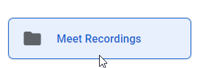
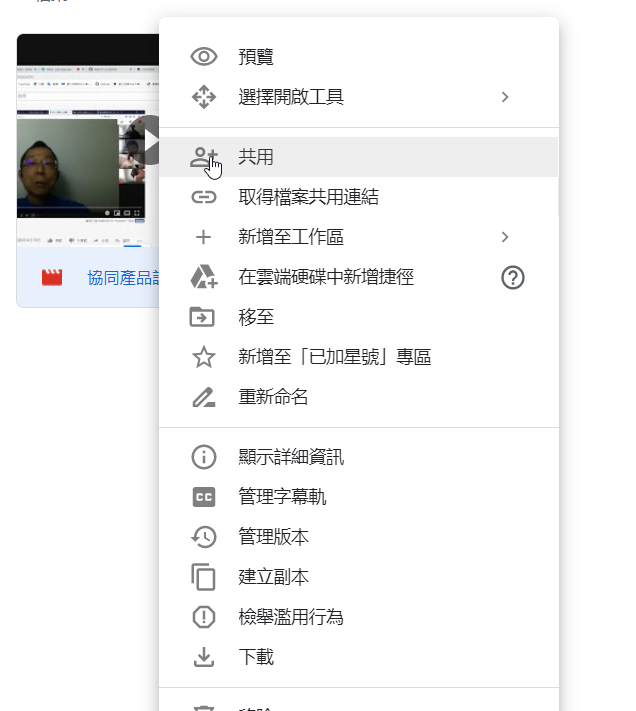
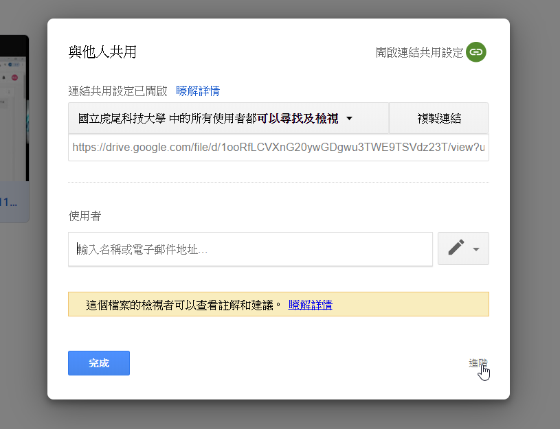
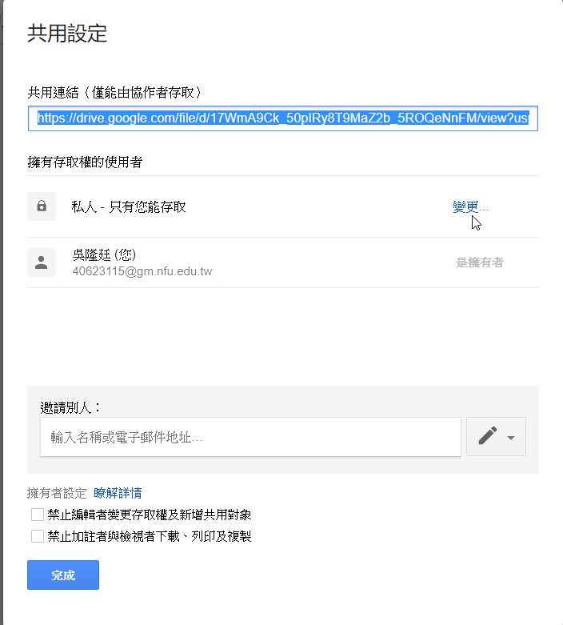
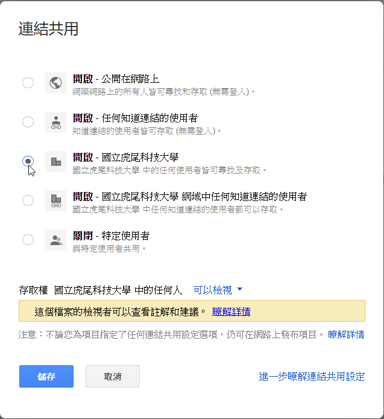

Week1-Week5 <<
Previous Next >> Week10-Week14
Week6-Week9
Week6
直播網址：https://www.youtube.com/watch?v=a69tNWKmC64&feature=youtu.be
工作分配：
topic 1：40623115、40623251、40723204、42723210、40723212、40723225
topic 0；40723232、40723234、40723238、40723245、40723250
Week7
topic 0 PDF：
https://drive.google.com/file/d/13THamnfayiRT4Wa9KzmjXQSP4ZW2jIej/view
（請各學員登入 gm 帳號，從 http://mde.tw/cd2020/content/Topics.html 下載 pdf 課程教材。）
topic 1 PDF
TOPIC 0 翻譯
Week8
本周採用線上教學課程
直播網址：
https://www.youtube.com/watch?v=FaOQiIGeK0U 第一支影片
https://youtu.be/x1qccPR0fug第二支影片
第三堂課各組抽4位同學直播
直播名單：
group 1:40723246
group 1:40723223
group 1:40723201
group 1:40732319
group 2:40623117
group 2:40723236
group 2:40723240
group 2:40723249
group 3:40723209
group 3:40723203
group 3:40723247
group 3:40623114
group 4:40723212
group 4:40723232
group 4:40723204
group 4:40623115
本機直播網址：
https://youtu.be/o3xLqFTSaZU
課堂問卷：
http://mde.tw/cd2020pj1/content/Streaming.html
Week9
期中考周
老師與組長在GOOGLE MEET中開會， 同時開放 live streaming，解決課程中遇到的問題。
透過GOOGLE行事曆建立 Google Handout Meet 會議，錄製至少 10 分鐘的個人期中簡報影片，說明個人於 W1-W8 所完成的相關內容。
個人簡報錄製後，會儲存至個人 Google Drive 中，將期中簡報 mp4 影片以共享設置為所有登入 @gm 帳號的用戶都可以觀看。

完成後請登入 @gm 個人帳號，至 https://forms.gle/T1Vs4sv9EdetxoWF7 填寫表單並完成期中個人自評成績登錄。
Week1-Week5 <<
Previous Next >> Week10-Week14